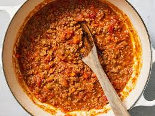

Home
Bologneise

Nat's What I Reckon - End of days bologneise
Ingredients
- 2 carrots
- 1 onion
- 500g beef / pork mince
- glass red wind
- 1 can tomato paste
- 1 cup milk
- 1 cup stock
- herbs
Steps
- Dice onion and carrot
- Stir fry in pan with olive oil
- Add mince and fry the shit out of it
- Add rosemary / other herbs
- Cook off any liquid and add wine then tomato paste
- Add milk and then stock
- Season with salt and pepper, add bay leaf
- Cook for 45 minutes or more